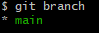
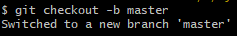
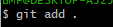
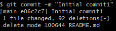
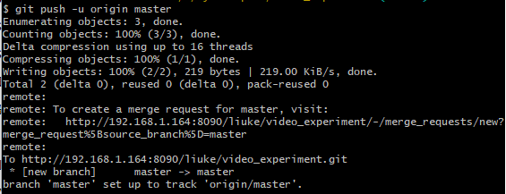
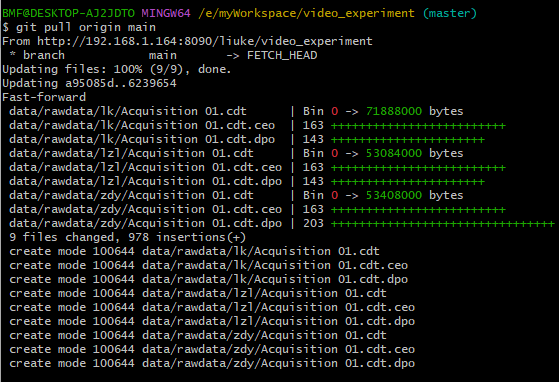

Gitlab使用方法
将Unity项目上传到GitLab涉及一些步骤。下面是一个简单的指南：
-
在GitLab上创建一个项目：首先，确保你已经在GitLab上创建了一个项目。登录到GitLab，点击"New Project"（新项目），然后按照提示创建一个新项目。选择项目的名称、描述和其他设置。
-
设置Git仓库：在GitLab项目页面的右上角，你会找到Git仓库的URL。复制这个URL，你将在后续步骤中用到。
-
在Unity中初始化Git仓库：在Unity中打开你的项目。如果你的项目还没有与Git关联，你需要在项目文件夹中打开终端并运行以下命令来初始化Git仓库：
git init -
添加项目文件：将你的Unity项目文件添加到Git仓库。你可以使用以下命令将所有文件添加到仓库：
git add .或者，你可以使用
.gitignore文件来排除不需要跟踪的文件，以减小仓库的大小。 -
提交更改：一旦你添加了文件，使用以下命令提交更改：
git commit -m "Initial commit" -
关联GitLab远程仓库：将Git仓库关联到GitLab远程仓库，替换
<GitLab仓库URL>为你在第2步中复制的URL。git remote add origin <GitLab仓库URL> -
推送到GitLab：最后，将你的本地仓库推送到GitLab上。你可能需要提供GitLab账户的凭据。
git push -u origin master -
完成：一旦推送完成，你的Unity项目就会上传到GitLab仓库中。
请注意，这只是一个基本的指南，具体的步骤可能会因你的项目和工作流程而有所不同。确保在上传项目之前备份好项目文件，并在GitLab上设置适当的访问权限和保护措施，以确保项目的安全性和可维护性。
已有的项目如何拉取
拉取项目
使用git clone 将项目下载到本地
git clone http://192.168.1.164:8090/liuke/video_experiment.git
提交项目
git branch
git checkout -b master
git add .
git commit -m "Initial commit"
git push -u origin master
修好后的项目在提交时，首先需要查看分支。每个clone 的项目代表一个分支。需要创建自己的分支，其他人的项目区分开。
- 查看分支

- 创建分支

- 添加文件

- 提交更改

- push

拉取更改
如果想要clone 其他人修改后的代码，可以使用pull命令拉取最新更改后的代码
git pull origin main

本博客所有文章除特别声明外，均采用 CC BY-NC-SA 4.0 许可协议。转载请注明来自 博客！